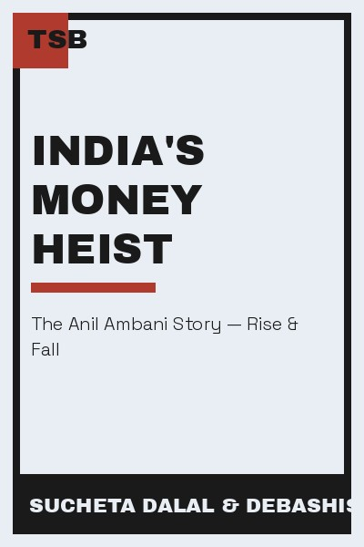

Library › Business & Startups
India's Money Heist — Summary & Key Lessons

The rise and spectacular fall of Anil Ambani — a corporate heist in plain sight.
📖 OPEN THE FULL INTERACTIVE BREAKDOWN →🌐 Read it in Hindi, Hinglish, Gujarati, Tamil & 22 more languages — free, with audio.
💡 The Big Idea
Anil Ambani was once Asia's richest man; within a decade he owed billions and his empire was dismantled. Dalal and Basu's forensic account shows it wasn't a single scandal but a decade of systemic behavior: aggressive borrowing against inflated valuations, related-party transactions, promoter overreach and a financial system that kept lending because of the family name. The book is a masterclass in how 'too big to question' works — and the warning that reputation is not collateral.
🧠 The 6 Key Lessons
Lesson 1: Reputation Is Not a Balance Sheet
The Name
Banks lent Anil Ambani billions largely because of the Ambani name — the assumption that the family would never default. Dalal and Basu's point: reputation is a liability on someone else's books. Lending to a famous name without checking the numbers is how the biggest Indian corporate defaults happened. The same applies to personal finance: never invest on the brand of the borrower.
📖 Example: Lenders extended and rolled over credit to R-ADAG companies for years on the strength of the family name while the underlying cash flows never covered the interest. The practical edge: 'reputation is not a balance sheet' is not a one-time decision — it's a… Read the full example →
⚡ Do this: Audit one 'trusted name' you're financially exposed to — employer, bank, scheme. Check the actual numbers, not the brand.
Lesson 2: Related-Party Deals Are Where Money Disappears
The Web
The book maps a web of group companies, promoter-held entities and related-party transactions that shifted value between them. The lesson: complexity is the enemy of accountability. If you can't understand who owns what and who pays whom, you're the counterparty of last resort. Clean structures are a feature, not a formality.
📖 Example: Value moved across dozens of group entities through guarantees, inter-corporate deposits and stake sales — each transaction defensible alone, indefensible in aggregate. Here's the part that usually gets missed: 'related' works quietly. You won't see it… Read the full example →
⚡ Do this: Map the ownership and cash flow of any entity you invest in or work with. If the map is unclear, that's the finding.
Lesson 3: Borrowing for Expansion Is a Bet on the Future
The Leverage
Anil Ambani's empire was built on borrowing against future valuations — telecom licenses, power plants, asset sales that kept getting delayed. When the future arrived slower than the interest, the structure collapsed. The lesson: leverage is a bet, and the bet's duration matters. Borrow only what the current cash flow can service, not what the dream promises.
📖 Example: RCom's spectrum payments were funded by debt whose servicing depended on revenue that never arrived — the interest clock never paused. The real test of this lesson is a bad day: the principle that survives a crisis, a tight deadline and a doubting colleague… Read the full example →
⚡ Do this: Check your own leverage: could your current income service your debt if the future got delayed by three years? If not, deleverage.
Lesson 4: When Lenders Stop Rolling Over, the Truth Arrives
The Collapse
The book's dramatic sequence: for years, lenders rolled over debt, avoiding the day of reckoning. When a few stopped, the entire web tightened within months. The lesson: rolled-over debt is hidden risk. Any business or person whose survival depends on refinancing is one decision away from insolvency — and that decision is never theirs.
📖 Example: Once one bank refused to roll over, others followed, guarantees got invoked, and the 'empire' became a default cascade in months. In practice, 'lenders stop rolling over, the truth arrives' shows up in tiny daily choices long before it shows up in outcomes —… Read the full example →
⚡ Do this: Stress-test your finances: what happens if your credit line, loan or main client disappears this quarter? Build the plan now.
Lesson 5: Governance Is What Survives the Founder
The System
Dalal and Basu's deeper point: the collapse happened because governance was weak at every layer — boards that didn't challenge, auditors that didn't dig, regulators that didn't ask. A company that runs on one person's will has no safety net. The institutions we trust are only as strong as their willingness to say no.
📖 Example: Independent directors sat on boards while value drained through complex structures — independence on paper, absence in practice. Most people nod at this principle and change nothing. The gap between agreeing and acting is where the whole game is won or lost. Read the full example →
⚡ Do this: Strengthen one governance layer in your own domain: a real second opinion, an external audit, a board that actually challenges.
Lesson 6: The Fall Is Faster Than the Rise
The Aftermath
It took a decade to build and about eighteen months to dismantle. The book's warning: leverage compounds in both directions. The same aggressiveness that accelerated the rise guarantees the speed of the fall. Build with equity and patience, not just borrowed speed — the tortoise's balance sheet survives the hare's.
📖 Example: Once confidence broke, asset sales happened at fire-sale prices, creditors circled, and the 'empire' dissolved faster than anyone expected. The uncomfortable truth about this lesson: it requires doing the boring version first — the unglamorous reps that… Read the full example →
⚡ Do this: Identify where you're using 'speed' to compensate for weak foundations — and rebuild one foundation with patience this quarter.
✅ 5-Step Action Plan
- Check the numbers behind every 'trusted name' you're exposed to.
- Map ownership and cash flow of anything you invest in.
- Stress-test: could you survive three delayed years?
- Build one governance layer that can say no.
- Replace one borrowed-speed shortcut with a patient foundation.
⚠️ When This Doesn't Work
The book's forensic anger is justified — and it can breed a cynical conclusion: all big business is theft, all promoters are crooks. Subrata Roy's Sahara shows the same pattern (faith, leverage, collapse) — and also that most businesses are not Sahara. The caveat: the lesson is not 'distrust all promoters' but 'trust none without verification.' India's economy is built by honest entrepreneurs too; the skill is distinguishing them with numbers, not with cynicism. Cynicism is a comfortable blindness with better posture.
💀 The Graveyard Proves It
🏦 Subrata Roy — The Empire That Fought the Referee. Burn: ₹24,000 crore ordered refunded, 2 years in jail. Read the full case study →
💬 Best Quotes from India's Money Heist
- “In the land of the Ambanis, the balance sheet was the last thing anyone checked.”
- “Leverage is a drug: it feels like success until it becomes the whole story.”
- “The market's memory is short, but its accounting is long.”
Interactive version: mark lessons as read, listen in your language, share quote cards.